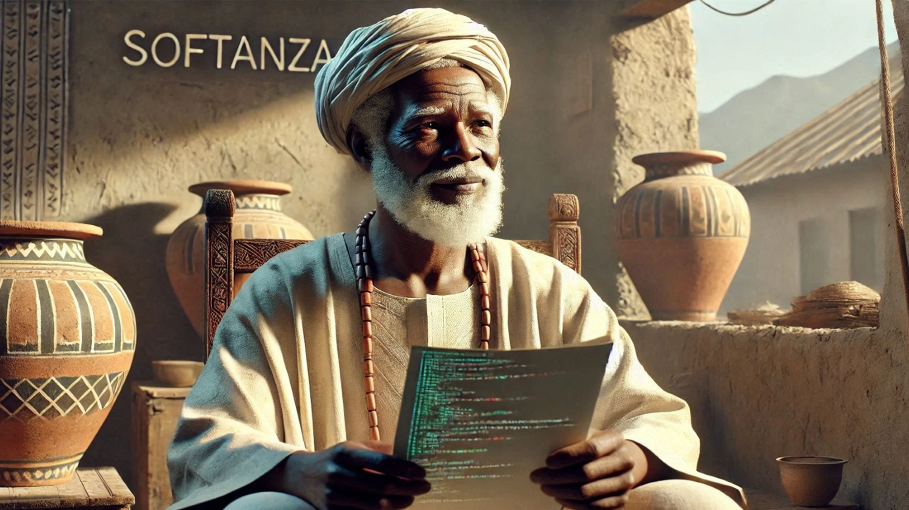
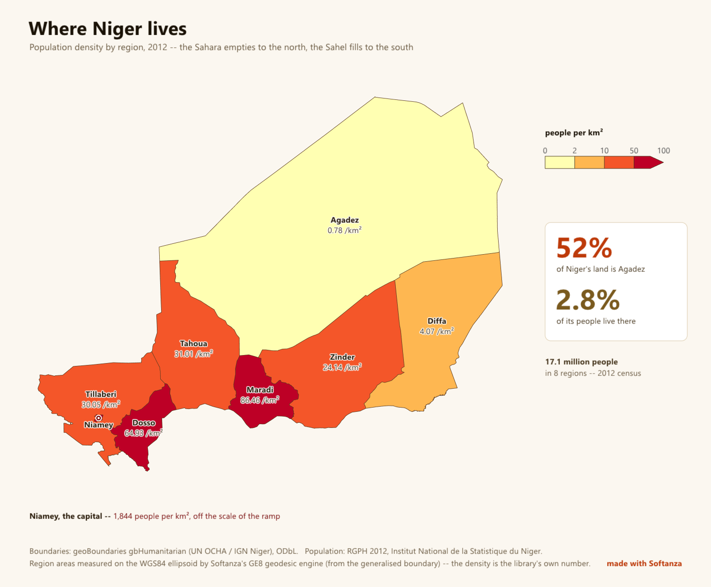

Skip to content

Softanza
The Makers Platform of the Agentic Age.
Born in Africa. Useful to the World!
Notes
Let the picture speak for ten seconds. Then one sentence: "This man is reading code. The wall behind him already says Softanza. Everything I will show tonight is in this picture: knowledge, a place, and a language one can read."
The founding act
Declare a language
In the agentic era you do not write software.
You declare worlds in languages made for their domains, and you govern how those worlds change.
Wolfram knows the world's facts. Softanza knows your world.
Notes
Three ideas, one per line. Do not read the page. The spoken example: a bank declares its entities, rules and actors; the system answers "which flows touch the deposit account, and what breaks if I add a field". Wolfram cannot answer that: it was never given your bank.
The engine and its faces
One engine in Zig, languages as faces
One engine in Zig · one language, Haro , in construction · twenty-eight areas, each rated honestly.
Notes
Say the stage as it is: Haro is the platform's language, its virtual machine and compiler exist and run, its charter awaits my ratification; I will not call it available before it is. The platform's credibility is that the Atlas shows its 36 "Emerging" lanes next to its 101 "Strong" ones.
One unified computational platform · 28 groups · 334 rated lanes
I/O, formats, extensibility, media
Cross-cutting disciplines
Notes
Let the wall of bars speak. "Each bar is a module group; green, blue, amber, red: strong, solid, partial, emerging. No competitor spans all these lines; we span them on one engine, and we show the reds." Click a group if asked: every page has its lanes and an example run tonight.
The Learning System · built tonight, 15 chapters × 4 languages
Full screen en · fr · ar · ha — every cell ran; no output stored Notes
Open the reader's menu, switch to Hausa, then to Arabic (right to left). Say: "This reader was built tonight in three minutes twenty-two: every cell of every chapter in every language was run, and the build would be red if one had failed." Then: "Zarma is not in it. That is your invitation."
Agents that cannot hurt you
The agent proposes. It does not commit.
A student lets loose an agent that "tidies" the course
Update plan (610 of 610 operations to commit):
* 1. delete file '…/course.zknw'
* 2. delete file '…/curriculum.zknw'
... The court, tonight
actor 'amina-helper-llm' cannot commit
-- it lacks the 'effectful' capability
PROVED the course folder still holds all 610 files Notes
The story to tell: Amina writes an agent that "tidies" the course. It proposes to delete all 610 files. It cannot: it does not hold the capability to act, it never did. A human reads the plan and refuses. Then the two numbers: credential stuffing was detected in 395 milliseconds and contained in 50, tonight, on this laptop, and the language model investigating could commit nothing.
Born in Africa

"Where Niger lives": rendered tonight by the engine in 5.9 seconds from the official borders and the 2012 census; the areas are measured by Softanza's geodesic routine. Notes
"Agadez is 52% of the territory and 2.8% of the people. That number was not copied from a table: the library measured every region's area on the ellipsoid." Then the roots: Sonibank, the customs school, RestoLean; the course in Hausa; Harobanda, the name of the Niamey bridge.
The family, with its stages
Softanza built The foundation and its engine, public.
The Learning System built Two courses, four languages, eleven guards.
Haro in construction The platform's language; its charter awaits.
Harobanda built The declared machine, MIT, boots in an emulator.
Aïcha named The coming face of the neural tier.
Zin · Refine · Studio built specification specification
HaroBase · Bangalo · COBOL specification built proposal
Start, in one hour
Two public repositories. One folder, copied.
git clone https://github.com/mayouni/stzlib.git
cd stzlib/libraries/stzlib
first
? Q("Softanza").Boxed() Output, tonight
┌──────────┐
│ Softanza │
└──────────┘ github.com/mayouni/stzlib · codeberg.org/MAyouni/stzlib · this site: github.com/mayouni/stzsite
Notes
Close with the invitation: the course in Zarma, the native review of Hausa, and the first "Softanza Architects". Everything shown tonight is a file one can open, and every figure links to the file that proves it.
→ or click: next · ←: previous · n: notes · h: menu · Esc: open the page